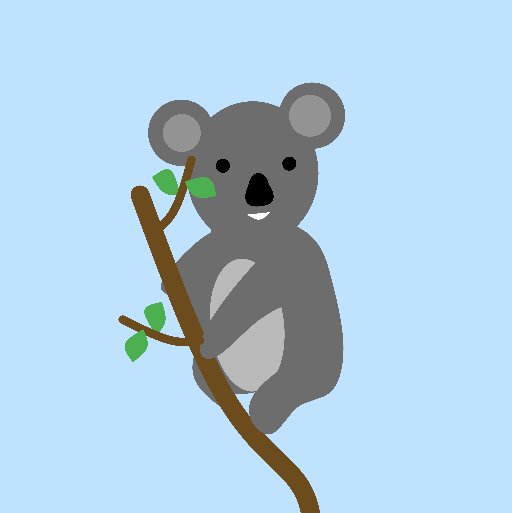
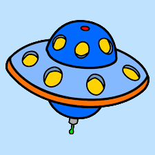

About Me
Hello! I’m a computer science graduate with a passion for developing
innovative solutions and showcasing my work. Check out some of my work below.
I update this page as soon as I have more to show!
Course Projects
Below are some of my favorite projects that I worked on during my undergraduate degree.

Artificial Ecosystem
Final project for Mathematical Modeling Class
Interactive Rubik's Cube
Interactive Computer Graphics final project

UFO Research Report
Final project for Data Mining Class
Basketball Game Simulation
Sports Analytics final project